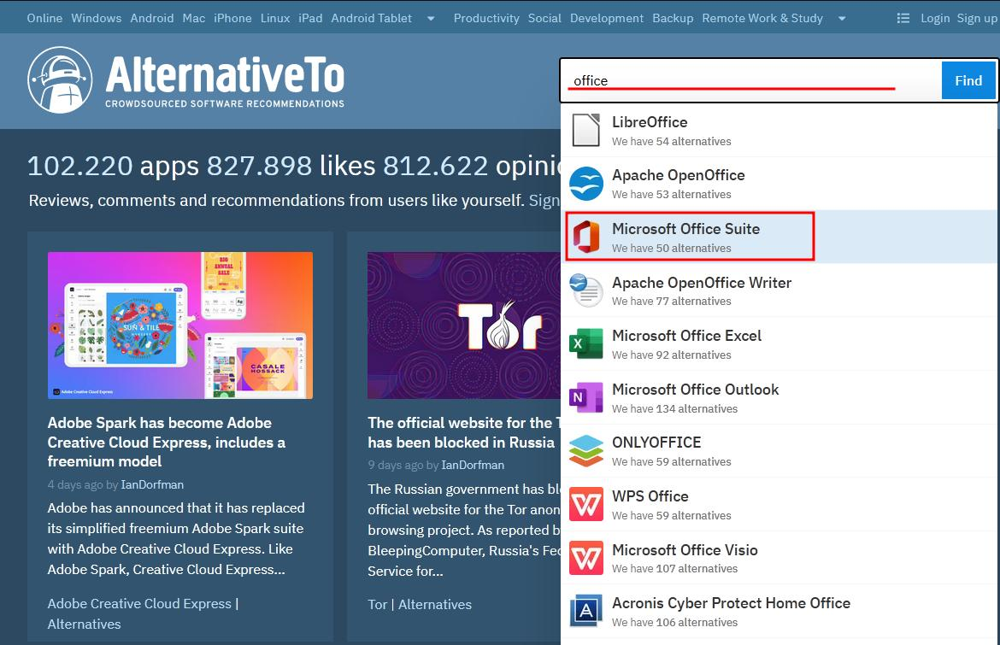
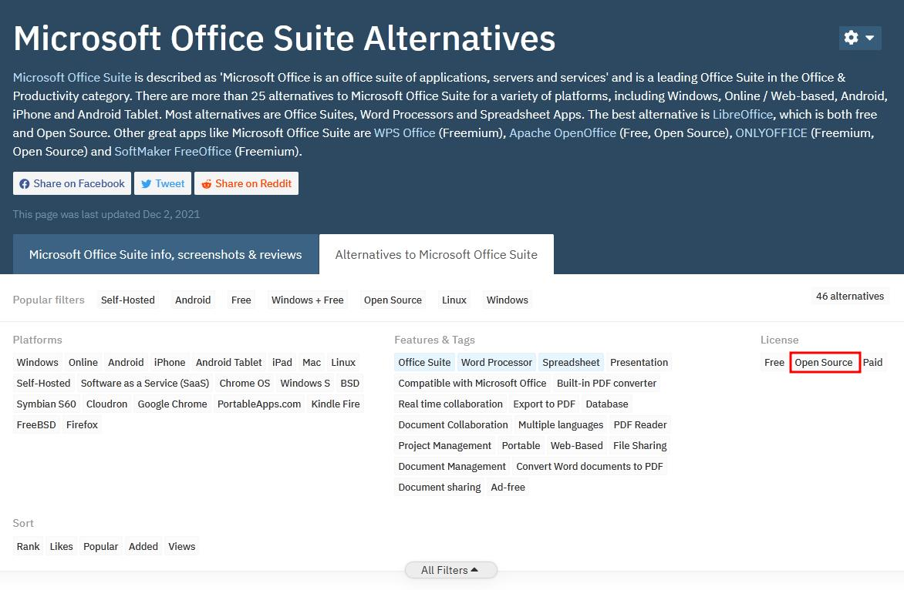
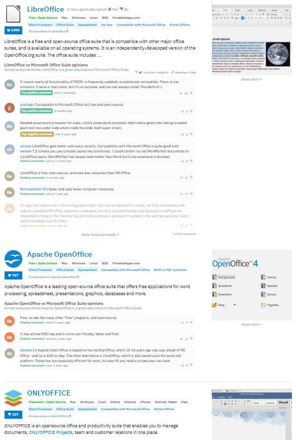

Alternativas de Software
Introdução
Existem diversos programas proprietários inchados (no sentido que pesam bastante para o computador) de uso gratuito que as pessoas insistem em usar ainda que transforme o pc numa tartaruga, isso quando não estamos falando de programas proprietários que não só são inchados como também são pagos que as pessoas fazem questão de ainda por cima crackear. E aí não só comprometem desempenho e privacidade mas também a segurança da máquina, e pra piorar geralmente essas pessoas utilizam somente 1 ou 2 funções desses programas...
Quem está há muito tempo na área de t.i. já cansou de ver gente com laptop dualcore com 2gb de ram usando Windows 7 com Microsoft Office pra editar a porcaria de um texto pra faculdade e ainda reclamando que tá travando, sendo que essa mesma máquina com um Linux Mint XFCE com Google Docs rodaria liso e faria a mesma coisa só que melhor e mais rápido!
Se você é daqueles que ainda perde tempo tendo que clicar na janelinha da licença de uso do WinRAR ou esperando 30 minutos pro seu computador abrir a porcaria de um .pdf essa página é pra você!
Eu não tenho o objetivo de converter ninguém para o lado Full Open-Source da força, mas depender de um programa que instala 5gb de dados e que executa ocupando 2gb de ram pra editar a porcaria de um tcc é falta de vergonha na cara com as opções que temos hoje em 2021 😂.
Então, caso você queira deixar de perder tempo, aqui tem um compilado de alternativas de software pra você não depender de coisa proprietária pra executar funções simples como ler emails, descompactar arquivos, editar textos e por aí vai...
Se você quiser continuar passando raiva com seu computador com programas que controlam ele mais do que você (abraços pra você que nesse momento utiliza Windows 10 só navegando no Chrome, usando o WinRAR só pra extrair arquivos e o µTorrent só pra baixar) a escolha é sua, mas caso você queira parar de depender dessas porcarias fique a vontade para instalar qualquer uma dessas alternativas pois sem nenhuma dúvida elas são mais leves e seguras que suas contrapartes.
-
Para substituir o Windows:
Linux Mint -
Para substituir o Chrome:
Firefox -
Para substituir o Apple AirDrop:
LocalSend -
Para substituir o Internet Download Manager:
JDownloader2 -
Para substituir o MSOutlook:
Thunderbird -
Para substituir o MSOffice:
OnlyOffice -
Para substituir o MSOffice:
LibreOffice -
Para substituir o Filmes e TV:
MPC-HC -
Para substituir o Groove Music:
Dopamine -
Para substituir o Microsoft Photos:
ImageGlass -
Para substituir o µTorrent:
qBittorrent -
Para substituir o WinRAR:
7-Zip -
Para substituir o Adobe Acrobat:
SumatraPDF -
Para substituir o DaemonTools:
WinCDEmu -
Para substituir o Zoom:
Jitsi -
Para substituir o Discord:
Element -
Para substituir o Lightshot:
Flameshot -
Para substituir o Adobe Photoshop:
GIMP -
Para substituir o CorelDRAW:
Inkscape -
Para substituir o TeamViewer/Anydesk:
DW Service -
Para substituir o TeamViewer/Anydesk:
RustDesk -
Para substituir o Whatsapp:
Signal -
Para substituir o Wallpaper Engine:
Lively Wallpaper -
Para substituir o Revo Uninstaller:
Bulk Crap Uninstaller -
Para substituir o TranslucentTB:
TaskbarX -
Para substituir o Evernote:
Joplin -
Para substituir o Visual Studio Code:
VSCodium
Softwares Universais
Sabe quando seu colega te manda um arquivo que ele salvou no Office 2019 do Windows 10 dele e quando você vai abrir no seu Office do Windows 7 fica tudo bugado? Ou quando você tem que instalar 1001 aplicativos pra fazer a mesma porcaria só pelo fato de ter mudado o sistema? Cansado desse tipo de situação eu resolvi o problema cortando o mal pela raíz: Utilizando softwares que rodam da mesma forma em basicamente todos os sistemas que uso (ou pelo menos em mais de 1 versão do Windows e do Linux). Sendo assim quando eu posso utilizar sistemas diferentes na mesma configuração, o que poupa tempo e especialmente dor cabeça.
-
Navegador:
Firefox -
Suíte Office:
LibreOffice -
Player de Música:
Audacious -
Player de Música 2:
DEADBEEF -
Visualizador de Imagem:
qView -
Player de Vídeo:
VLC Player -
Player de Vídeo 2:
MPV -
Youtube Vídeo Downloader:
Open Video Downloader -
Youtube Vídeo Downloader 2:
YouTube Video and Audio Downloader -
Gravação e Streaming de Vídeo:
OBS -
Assistir Filmes Online:
Stremio -
Edição de Vídeo:
Kdenlive -
Edição/Gravação de Áudio:
Audacity -
Conversão de Áudio/Vídeo:
Shutter Encoder -
Pintura Digital:
Krita -
Central de Mídia:
Kodi -
Emulação:
Retroarch -
Leitor de PDF:
Seu navegador já faz isso duh -
Montagem de ISO:
Todo sistema atual já tem nativamente de montagem de iso...
Alternativas para Android
F-Droid
F-Droid é um loja de software para Android, tem uma função similar à da Google Play. O repositório principal, hospedado pelo projeto, contém apenas aplicativos gratuitos e de código aberto. Os aplicativos podem ser navegados, baixados e instalados a partir do site ou do F-Droid sem a necessidade de registro.
Baixe AquiOutras Alternativas
-
Launcher:
Lawnchair 2 -
Launcher:
KISS Launcher -
Teclado:
Simple Keyboard -
Teclado:
AnySoftKeyboard -
Câmera:
OpenCamera -
Gerenciador de Arquivos:
Amaze File Manager -
Cliente de Youtube:
NewPipe -
Cliente de Facebook:
Frost for Facebook -
Mensageiro:
Telegram -
Mensageiro:
Signal -
Emulação:
Retroarch -
Player de Música:
Vynil Music Player -
Player de Vídeo:
VLC Player -
Player de Vídeo:
MPV -
Transformação de link:
UntrackMe
E se eu quiser alternativas pra outro aplicativo?
Recomendo utilizar o AlternativeTo para isso.
Basta digitar o nome do aplicativo para qual você quer alternativas na barra de pesquisa e depois clicar nele:
Desça um pouco mais a página e selecione All filters para poder filtrar por sistema ou licença, em License: marque Open Source:
E você verá uma lista de aplicativos similares com licença Open-Source:
